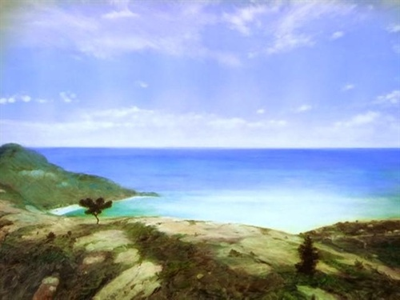

谢谢少侠，有机会请你吃甜筒🍦
谢谢少侠，有机会请你吃甜筒🍦
|  | |
|---|---|
Chapter 1 |
|
|
e was an old man who fished aline in a skiff in the Gulf Stream and he had gone eighty-four days now without taking a fish. In the first forty days a boy had been with him. But after forty days without a fish the boy's parents had told him that the old man was now definitely and finally salao, which is the worst form of unlucky, and the boy had gone at their orders in another boat which caught three good fish the first week. It made the boy sad to see the old man come in each day with his skiff empty and he always went down to help him carry either the coiled lines or the gaff and harpoon and the sail that was furled around the mast. The sail was patched with flour sacks and, furled, it looked like the flag of permanent defeat. The old man was thin and gaunt with deep wrinkles in the back of his neck. The brown blotches of the benevolent skin cancer the sun brings from its reflection on the tropic sea were on his cheeks. The blotches ran well down the sides of his face and his hands had the deep-creased scars from handling heavy fish on the cords. But none of these scars were fresh. They were as old as erosions in a fishless desert. Everything about him was old except his eyes and they were the same color as the sea and were cheerful and undefeated. "Santiago," the boy said to him as they climbed the bank from where the skiff was hauled up. "I could go with you again. We've made some money." The old man had taught the boy to fish and the boy loved him. "No," the old man said. "You're with a lucky boat. Stay with them." "But remember how you went eighty-seven days without fish and then we caught big ones every day for three weeks." "I remember," the old man said. "I know you did not leave me because you doubted." "It was papa made me leave. I am a boy and I must obey him." "I know," the old man said. "It is quite normal." "He hasn't mush faith." "No," the old man said. "But we have. Haven't we?" "Yes," the boy said. "Can I offer you a beer on the Terrace and then we'll take the stuff home." "Why not?" the old man said. "Between fishmen." They sat on the Terrace and many of the fishmen made fun of the old man and he was not angry. Others, of the older fishmen, looked at him and were sad. But they did not show it and they spoke politely about the current and the depths they had drifted their lines at and the steay good weather and of what they had seen. The successful fishermen of that day were already in and had butchered their marlin out and carried them laid full length across two planks, with two men staggering at the end of each plank, to the fish house where they waited for the ice truck to carry them to the market in Havana. Those who had caught sharks had taken them to the shark factory on the other side of the cove where they were hoisted on a block and tackle, their livers removed, their fins cut off and their hides skinned out and their flesh cut into strips for salting. When the wind was in the east a smell came across the harbour from the shark factory; but today there was only the faint edge of the odour bucause the wind had backed into the north and then dropped off and it was pleasant and sunny on the Terrace. "Santiago," the boy said. "Yes," the old man said. He was holding his glass and thinking of many years ago. "Can I go out to get sardines for you for tomorrow?" "No. Go and play baseball. I can still row and Rogelio will throw the net." "I would like to go. If I can not fish with you. I would like to serve in some way." "You bought me a beer," the old man said. "You are already a man." "How old was I when you first took me in a boat?" "Five and you nearly were killed when I brought the fish in too green and he nearly tore the boat to pieces. Can you remember?" "I can remember the tail slapping and banging and the thwart breaking and the noise of the clubbing. I can remember you throwing me into the bow where the wet coiled lines were and feeling the whole boat shiver and the noise of you clubbing him like chopping a tree down and the sweet blood smell all over me." "Can you really remember that or did I just tell it to you?" "I remember everything from when we first went together." The old man looked at him with his sun-burned, confident loving eyes. "If you were my boy I'd take you out and gamble," he said. "But you are your father's and your mother's and you are in a lucky boat." "May I get the sardines? I know where I can get four baits too." "I have mine left from today. But I put them in salt in the box." "Let me get four fresh ones." "One," the old man said. His hope and his confidence had never gone. But now they were freshening as when the breeze rises. "Two," the boy said. "Two," the old man agreed. "You didn't steal them?" "I would," the boy said. "But I bought these." "Thank you," the old man said. He was too simple to wonder when he had attained humility. But he knew he had attained it and he knew it was not disgraceful and it carried no loss of true pride. "Tomorrow is going to be a good day with this current," he said. "Where are you going?" the boy asked. "Far out to come in when the wind shifts. I want to be out before it is light." "I'll try to get him to work far out," the boy said. "Then if you hook something truly big we can come to your aid." "He does not like to work too far out." "No," the boy said. "But I will see something that he can not see such as a bird working and get him to come out after dolphin." "Are his eyes that bad?" "He is almost blind." "It is strange," the old man said. "He never went turtle-ing. That is what kills the eyes." "But you went turtle-ing for years off the Mosquito Coast and your eyes are good." "I am a strange old man." "But you are strong enough now for a truely big fish?" "I think so. And there are many tricks." "Let us take the stuff home," the boy said. "So I can get the cast net and go after the sardines." They picked up the gear from the boat. The old man carried the mast on his shoulder and the boy carried the wooden boat with the coiled, hard-braided brown lines, the gaff and the harpoon with its shaft. The box with the baits was under the stern of the skiff along with the club that was used to subdue the big fish when they were brought alongside. No man would steal from the old man but it was better to take the sail and the heavy lines home as the dew was bad for them and, though that a gaff and a harpoon were needless temptations to leave in a boat. They walked up the road together to the old man's shack and went in through its open door. The old man leaned the mast with its wrapped sail against the wall and the boy put the box and the other gear beside it. The mast was nearly as long as the one room of the shack. The shack was made of the tough budshields of the royal palm which are called guano and in it there was a bed, a table, one chair, and a place on the dirt floor to cook with charcoal. On the brown walls of the flattened, overlapping leaves of the sturdy fibered guano there was a picture in color of the Sacred Heart of Jesus and another of the Virgin of Cobre. These were relics of his wife. Once there had been a tinted photograph of his wife on the wall but he had taken it down because it made him too lonely to see it and it was on the shelf in the corner under his clean shirt. "What do you have to eat?" the boy asked. "A pot of yellow rice with fish. Do you want some?" "No. I will eat at home. Do you want me to make the fire?" "No. I will make it later on. Or I may eat the rice cold." "May I take the cast net?" "Of course." There was no cast net and the boy remembered when they had sold it. But they went through this fiction every day. There was no pot of yellow rice and fish and the boy knew this too. "Eighty-five is a lucky number," the old man said. "How would you like to see me bring one in that dressed out over a thousand pounds?" "I'll get the cast net and go for sardines. Will you sit in the sun in the doorway?" "Yes. I have yesterday's paper and I will read the baseball." The boy did not know whether yesterday's paper was a fiction too. But the old man brought it out from under the bed. "Perico gave it to me at the bodega," he explained. "I'll be back when I have the sardines. I'll keep yours and mine together on ice and we can share them in the morning. When I come back you can tell me about the baseball." "The Yankees cannot lose." "But I fear the Indians of Cleveland." "Have faith in the Yankees my son. Think of the great DiMaggio." "I fear both the Tigers of Detroit and the Indians of Cleveland." "Be careful or you will fear even the Reds of Cincinnati and the White Sax of Chicago." "You study it and tell me when I come back." "Do you think we should buy a terminal of the lottery with an eighty-five? Tomorrow is the eighty-fifth day." "We can do that," the boy said. "But what about the eighty-seven of your great record?" "It could not happen twice. Do you think you can find an eighty-five?" "I can order one." "One sheet. That's two dollars and a half. Who can we borrow that from?" "That's easy. I can always borrow two dollars and a half." "I think perhaps I can too. But I try not to borrow. First you borrow. Then you beg." "Keep warm old man," the boy said. "Remember we are in September." "The month when the great fish come," the old man said. "Anyone can be a fisherman in May." "I go now for the sardines," the boy said. When the boy came back the old man was asleep in the chair and the sun was down. The boy took the old army blanket off the bed and spread it over the back of the chair and over the old man's shoulders. They were strange shoulders, still powerful although very old, and the neck was still strong too and the creases did not show so much when the old man was asleep and his head fallen forward. His shirt had been patched so many times that it was like the sail and the patches were faded to many different shades by the sun. The old man's head was very old though and with his eyes closed there was no life in his face. The newspaper lay across his knees and the weight of his arm held it there in the evening breeze. He was barefooted. The boy left him there and when he came back the old man was still asleep. "Wake up old man," the boy said and put his hand on one of the old man's knees. The old man opened his eyes and for a moment he was coming back from a long way away. Then he smiled. "What have you got?" he asked. "Supper," said the boy. "We're going to have supper." "I'm not very hungry." "Come on and eat. You can't fish and not eat." "I have," the old man said getting up and taking the newspaper and folding it. Then he started to fold the blanket. "Keep the blanket around you," the boy said. "You'll not fish without eating while I'm alive." "Then live a long time and take care of yourself," the old man said. "What are we eating?" "Black beans and rice, fried bananas, and some stew." The boy had brought them in a two-decker metal container from the Terrace. The two sets of knives and forks and spoons were in his pocket with a paper napkin wrapped around each set. "Who gave this to you?" "Martin. The owner." "I must thank him." "I thanked him already," the boy said. "You don't need to thank him." "I'll give him the belly meat of a big fish," the old man said. "Has he done this for us more than once?" "I think so." "I must give him something more than the belly meat then. He is very thoughtful for us." "He sent two beers." "I like the beer in cans best." "I know. But this is in bottles, Hatuey beer, and I take back the bottles." "That's very kind of you," the old man said. "Should we eat?" "I've been asking you to," the boy told him gently. "I have not wished to open the container until you were ready." "I'm ready now," the old man said. "I only needed time to wash." Where did you wash? the boy thought. The village water supply was two streets down the road. I must have water here for him, the boy thought, and soap and a good towel. Why am I so thoughtless? I must get him another shirt and a jacket for the winter and some sort of shoes and another blanket. "Your stew is excellent," the old man said. "Tell me about the baseball," the boy asked him. "In the American League it is the Yankees as I said," the old man said happily. "They lost today," the boy told him. "That means nothing. The great DiMaggio is himself again." "They have other men on the team." "Naturally. But he makes the difference. In the other league, between Brooklyn and Philadelphia I must take Brooklyn. But then I think of Dick Sisler and those great drives In the old park." "There was nothing ever like them. He hits the longest ball I have ever seen." "Do you remember when he used to come to the Terrace?" "I wanted to take him fishing but I was too timid to ask him. Then I asked you to ask him and you were too timid." "I know. It was a great mistake. He might have gone with us. Then we would have that for all of our lives." "I would like to take the great DiMaggio fishing," the old man said. "They say his father was a fisherman. Maybe he was as poor as we are and would understand." "The great Sisler's father was never poor and he, the father, was playing in the Big Leagues when he was my age." "When I was your age I was before the mast on a square rigged ship that ran to Africa and I have seen lions on the beaches in the evening." "I know. You told me." "Should we talk about Africa or about baseball?" "Baseball I think," the boy said. "Tell me about the great John J. McGraw." He said Jota for J. "He used to come to the Terrace sometimes too in the older days. But he was rough and harsh-spoken and difficult when he was drinking. His mind was on horses as well as baseball. At least he carried lists of horses at all times in his pocket and frequently spoke the names of horses on the telephone." "He was a great manager," the boy said. "My father thinks he was the greatest." "Because he came here the most times," the old man said. "If Durocher had continued to come here each year your father would think him the greatest manager." "Who is the greatest manager, really, Luque or Mike Gonzalez?" "I think they are equal." "And the best fisherman is you." "No. I know others better." "Que Va," the boy said. "There are many good fishermen and some great ones. But there is only you." "Thank you. You make me happy. I hope no fish will come along so great that he will prove us wrong." "There is no such fish if you are still strong as you say." "I may not be as strong as I think," the old man said. "But I know many tricks and I have resolution." "You ought to go to bed now so that you will be fresh in the morning. I will take the things back to the Terrace." "Good night then. I will wake you in the morning." "You"re my alarm clock," the boy said. "Age is my alarm clock," the old man said. "Why do old men wake so early? Is it to have one longer day?" "I don"t know," the boy said. "All I know is that young boys sleep late and hard." "I can remember it," the old man said. "I'll waken you in time." "I do not like for him to waken me. It is as though I were inferior." "I know." "Sleep well old man." The boy went out. They had eaten with no light on the table and the old man took off his trousers and went to bed in the dark. He rolled his trousers up to make a pillow, putting the newspaper inside them. He rolled himself in the blanket and slept on the other old newspapers that covered the springs of the bed. He was asleep in a short time and he dreamed of Africa when he was a boy and the long golden beaches and the white beaches, so white they hurt your eyes, and the high capes and the great brown mountains. He lived along that coast now every night and in his dreams he heard the surf roar and saw the native boats come riding through it. He smelled the tar and oakum of the deck as he slept and he smelled the smell of Africa that the land breeze brought at morning. Usually when he smelled the land breeze he woke up and dressed to go and wake the boy. But tonight the smell of the land breeze came very early and he knew it was too early in his dream and went on dreaming to see the white peaks of the Islands rising from the sea and then he dreamed of the different harbours and roadsteads of the Canary Islands. He no longer dreamed of storms, nor of women, nor of great occurrences, nor of great fish, nor fights, nor contests of strength, nor of his wife. He only dreamed of places now and of the lions on the beach. They played like young cats in the dusk and he loved them as he loved the boy. He never dreamed about the boy. He simply woke, looked out the open door at the moon and unrolled his trousers and put them on. He urinated outside the shack and then went up the road to wake the boy. He was shivering with the morning cold. But he knew he would shiver himself warm and that soon he would be rowing. The door of the house where the boy lived was unlocked and he opened it and walked in quietly with his bare feet. The boy was asleep on a cot in the first room and the old man could see him clearly with the light that came in from the dying moon. He took hold of one foot gently and held it until the boy woke and turned and looked at him. The old man nodded and the boy took his trousers from the chair by the bed and, sitting on the bed, pulled them on. The old man went out the door and the boy came after him. He was sleepy and the old man put his arm across his shoulders and said, "I am sorry." "Qua Va," the boy said. "It is what a man must do." They walked down the road to the old man's shack and all along the road, in the dark, barefoot men were moving, carrying the masts of their boats. When they reached the old man's shack the boy took the rolls of line in the basket and the harpoon and gaff and the old man carried the mast with the furled sail on his shoulder. "Do you want coffee?" the boy asked. "We'll put the gear in the boat and then get some." They had coffee from condensed milk cans at an early morning place that served fishermen. "How did you sleep old man?" the boy asked. He was waking up now although it was still hard for him to leave his sleep. "Very well, Manolin," the old man said. "I feel confident today." "So do I," the boy said. "Now I must get your sardines and mine and your fresh baits. He brings our gear himself. He never wants anyone to carry anything." "We're different," the old man said. "I let you carry things when you were five years old." "I know it," the boy said. "I'll be right back. Have another coffee. We have credit here." He walked off, bare-footed on the coral rocks, to the ice house where the baits were stored. The old man drank his coffee slowly. It was all he would have all day and he knew that he should take it. For a long time now eating had bored him and he never carried a lunch. He had a bottle of water in the bow of the skiff and that was all he needed for the day. The boy was back now with the sardines and the two baits wrapped in a newspaper and they went down the trail to the skiff, feeling the pebbled sand under their feet, and lifted the skiff and slid her into the water. "Good luck old man." "Good luck," the old man said. He fitted the rope lashings of the oars onto the thole pins and, leaning forward against the thrust of the blades in the water, he began to row out of the harbour in the dark. There were other boats from the other beaches going out to sea and the old man heard the dip and push of their oars even though he could not see them now the moon was below the hills. |
|